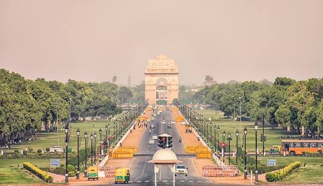

Destination Information
Select Destination from dropdown to see information and pictures.
Delhi:
Delhi,[a] officially the National Capital Territory (NCT) of Delhi, is a city and a union territory of India containing New Delhi, the capital of India. Lying on both sides of the Yamuna river, but chiefly to the west, or beyond its right bank, Delhi shares borders with the state of Uttar Pradesh in the east and with the state of Haryana in the remaining directions. Delhi became a union territory on 1 November 1956 and the NCT in 1995.[15] The NCT covers an area of 1,484 square kilometres (573 sq mi).[5] According to the 2011 census, Delhi's city proper population was over 11 million,[6][16] while the NCT's population was about 16.8 million.[7] Delhi's urban agglomeration, which includes the satellite cities Ghaziabad, Faridabad, Gurgaon and Noida in an area known as the National Capital Region (NCR), has an estimated population of over 28 million, making it the largest metropolitan area in India and the second-largest in the world (after Tokyo).[8]
Chandigarh:
Chandigarh (/ˌtʃʌndɪˈɡɑːr/) is a union territory and planned city in northern India, serving as the shared capital of the surrounding states, namely Punjab to the north, west and the south, and Haryana to the east. Chandigarh constitutes the bulk of the Chandigarh Capital Region or Greater Chandigarh, which also includes the adjacent satellite cities of Panchkula in Haryana and Mohali in Punjab. It is situated near the foothills of the Himalayas, 260 km (162 miles) north of New Delhi and 229 km (143 miles) southeast of Amritsar. Chandigarh is one of the earliest planned cities in post independence India and is internationally known for its architecture and urban design.[8] The master plan of the city was prepared by Swiss-French architect Le Corbusier, which built upon earlier plans created by the Polish architect Maciej Nowicki and the American planner Albert Mayer. Most of the government buildings and housing in the city were designed by a team headed by Le Corbusier, Jane Drew and Maxwell Fry. Chandigarh's Capitol Complex—as part of a global ensemble of Corbusier's buildings—was declared a World Heritage Site by UNESCO at the 40th session of the World Heritage Conference in July 2016.[9
Kashmir:
Kashmir (IPA: [kaʃmiːr]) is the northernmost geographical region of the Indian subcontinent. Until the mid-19th century, the term "Kashmir" denoted only the Kashmir Valley between the Great Himalayas and the Pir Panjal Range. Today, the term encompasses a larger area that includes the India-administered territories of Jammu and Kashmir and Ladakh, the Pakistan-administered territories of Azad Kashmir and Gilgit-Baltistan, and the Chinese-administered territories of Aksai Chin and the Trans-Karakoram Tract.[1][2][3] In 1820, the Sikh Empire, under Ranjit Singh, annexed Kashmir.[4] In 1846, after the Sikh defeat in the First Anglo-Sikh War, and upon the purchase of the region from the British under the Treaty of Amritsar, the Raja of Jammu, Gulab Singh, became the new ruler of Kashmir. The rule of his descendants, under the paramountcy (or tutelage[5][6]) of the British Crown, lasted until the Partition of India in 1947, when the former princely state of the British Indian Empire became a disputed territory, now administered by three countries: China, India, and Pakistan.[1][7][8][2]
Manali:

Manali is a town, near Kullu town in Kullu district in the Indian state of Himachal Pradesh.[2] It is situated in the northern end of the Kullu Valley, formed by the Beas River. The town is located in the Kullu district, approximately 270 kilometres (170 mi) north of the state capital of Shimla and 544 kilometres (338 mi) northeast of the national capital of New Delhi. With a population of 8,096 people recorded in the 2011 Indian census Manali is the beginning of an ancient trade route through Lahaul (H.P) and Ladakh, over the Karakoram Pass and onto Yarkand and Hotan in the Tarim Basin of China. Manali is a popular tourist destination in India and serves as the gateway to the Lahaul and Spiti district as well as the city of Leh in Ladakh.[3]
Gurgaon:
Gurgaon (Hindi: [ɡʊɽɡãːw]), officially named Gurugram ([ɡʊɾʊɡɾaːm]), is a planned city and administrative headquarters of Gurugram District, located in the northern Indian state of Haryana.[6] It is situated near the Delhi–Haryana border, about 30 kilometres (19 mi) southwest of the national capital New Delhi and 268 km (167 mi) south of Chandigarh, the state capital.[7] It is one of the major satellite cities of Delhi and is part of the National Capital Region of India.[8] As of 2011, Gurgaon had a population of 1,153,000.[2][4] Gurgaon is India's second largest information technology hub and third largest financial and banking hub.[9][10] Gurgaon is also home to one of India's largest medical tourism industries.[11] Despite being India's 56th largest city in terms of population, Gurgaon is the 8th largest city in the country in terms of total wealth.[12] Gurgaon serves as the headquarters of many of India's largest companies, is home to thousands of startup companies and has local offices for more than 250 Fortune 500 companies.[13] It accounts for almost 70% of the total annual economic investments in Haryana state, which has helped it become a leading hub for high-tech industry in northern India.[14] Gurgaon is categorised as very high on the Human Development Index, with an HDI of 0.889 (2017).[15] Gurgaon's economic growth started in the 1970s when Maruti Suzuki India Limited established a manufacturing plant and gathered pace after General Electric established its business outsourcing operations in the city in collaboration with real-estate firm DLF.[16][17] New Gurgaon, Manesar and Sohna serve as adjoining manufacturing and upcoming real estate hubs for Gurgaon. Despite rapid economic and population growth, Gurgaon continues to battle socio-economic issues, such as high-income inequality and high air pollution.[18][19] It also has a flood problem due to the limited drainage capacity.[20]